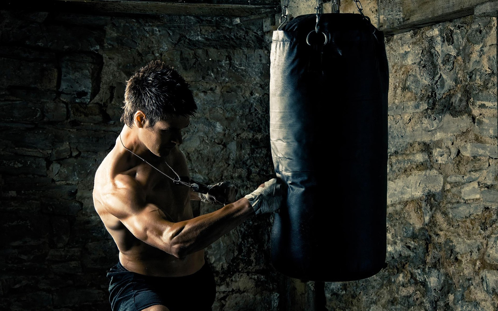
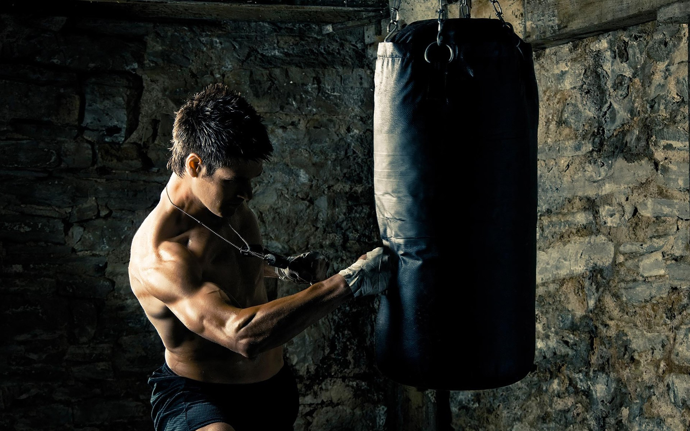

Boxing, often hailed as the “sweet science,” is more than just a sport; it’s a timeless ballet of power, precision,
and perseverance. At its core, boxing is an electrifying blend of physical prowess and strategic acumen, where each
jab, hook, and uppercut narrates a story of determination and skill.
Imagine stepping into the ring, where every sound reverberates with anticipation—the rhythmic thud of gloves against pads,
the sharp hissing of breath, and the resounding clash of willpower. Here, athletes transform their bodies into finely-tuned machines,
harnessing strength and agility in a symphony of movement. The ring is a canvas, and the boxer, a master artist painting with punches,
footwork, and defensive maneuvers.
Training for boxing is an odyssey of self-discovery and resilience. It’s not merely about throwing punches; it’s about mastering the delicate dance of offense and defense,
learning to read an opponent’s intentions, and forging a mental fortitude that can withstand the fiercest storms. Each training session is a step towards perfection, a
test of endurance where sweat and grit forge champions.Boxing is as much a mental game as it is a physical one. It demands strategic thinking, split-second decision-making,
and an unyielding spirit. It teaches you to stay calm under pressure, to adapt and overcome. The discipline and intensity of boxing build character, resilience, and a sense
of accomplishment that transcends the ring.
CORRECT WAY TO BOXING
 
